Cele mai bune farduri de pleoape: top și sfaturi de la make-up artiști
Alegerea corectă a fardurilor evidențiază privirea, face ochii mai expresivi și armonioși. În această recenzie am adunat produse populare: palete, farduri cremoase și pudră, potrivite pentru diferite tipuri de ten și nuanțe ale ochilor.
Consultații / Programare
Recenzii populare despre farduri de pleoape
Tipuri de farduri
Diversitate de texturi: pudră, cremă, palete.
Alegerea nuanței
Cum să alegi culoarea potrivită pentru tipul tău de ochi și ten.
Aplicare și tehnică
Sfaturi pentru estompare, crearea gradientelor și efect smoky eyes.
Palete și farduri populare
Recenzie a celor mai bune produse: Anastasia, NYX, MAC și Benefit.
Instrumente pentru machiajul ochilor
Perii, aplicatoare și bureței pentru rezultate perfecte.
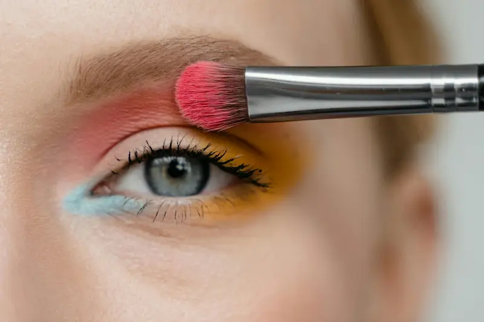
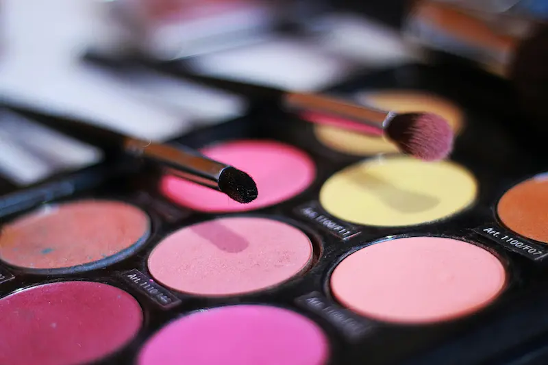
Tipuri de farduri de pleoape
Fardurile de pleoape vin în diferite texturi și finisaje — de la pudră mată la cremă și cu sclipici. Fiecare tip este potrivit pentru tehnici și scopuri diferite: machiaj de zi, seară sau profesional.
Combinarea diferitelor tipuri de farduri permite crearea de look-uri multidimensionale — de la nuanțe nude delicate până la smoky eyes expresive. Începătorilor li se recomandă să înceapă cu palete de bază cu nuanțe universale.
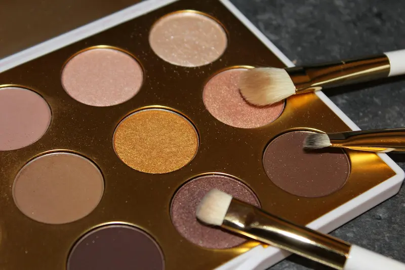
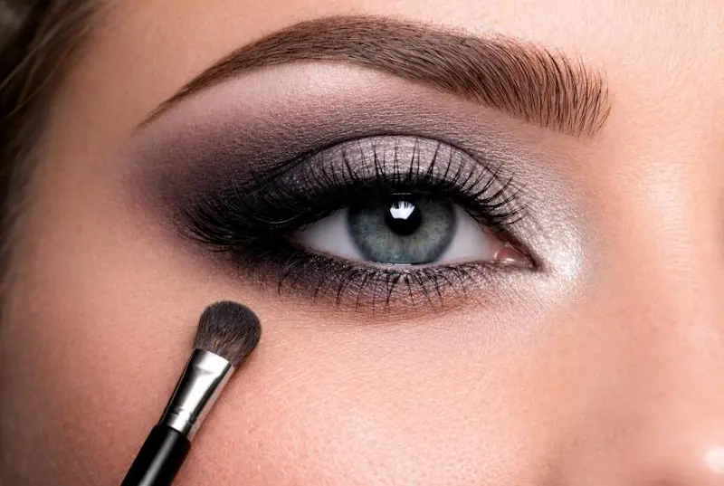
Cum să alegi nuanța fardului de pleoape
O nuanță corect aleasă evidențiază culoarea ochilor și face privirea mai expresivă. La alegerea culorii este important să ții cont de iris, tonul pielii și stilul general al machiajului.
Pentru machiaj de zi se aleg de obicei nuanțe neutre și nude, iar pentru seară — culori mai intense și contrastante. Combinarea mai multor nuanțe ajută la crearea unor tranziții fine și a unui efect profesional.
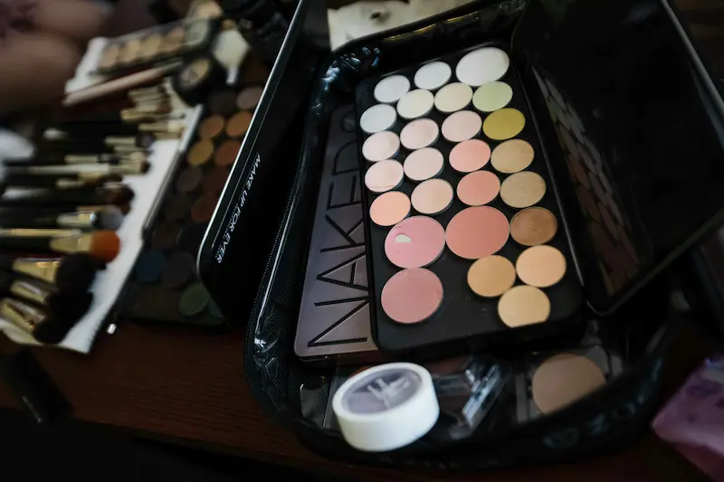
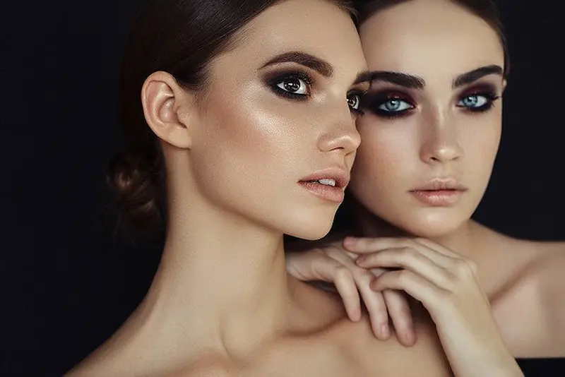
Aplicare și tehnică a fardului de pleoape
Tehnica corectă de aplicare a fardului ajută la un machiaj mai curat și mai expresiv. Chiar și metodele de bază permit obținerea unui rezultat profesional și evidențiază forma ochilor.
Pentru machiaj de zi, sunt suficiente 2–3 nuanțe, iar pentru un look de seară se pot folosi mai multe culori, creând tranziții line și efect de profunzime.
Ai nevoie de machiaj profesional?
Dacă vrei să alegi tonul perfect sau să obții un machiaj profesional, consultă un make-up artist experimentat.
Vezi serviciile unui make-up artist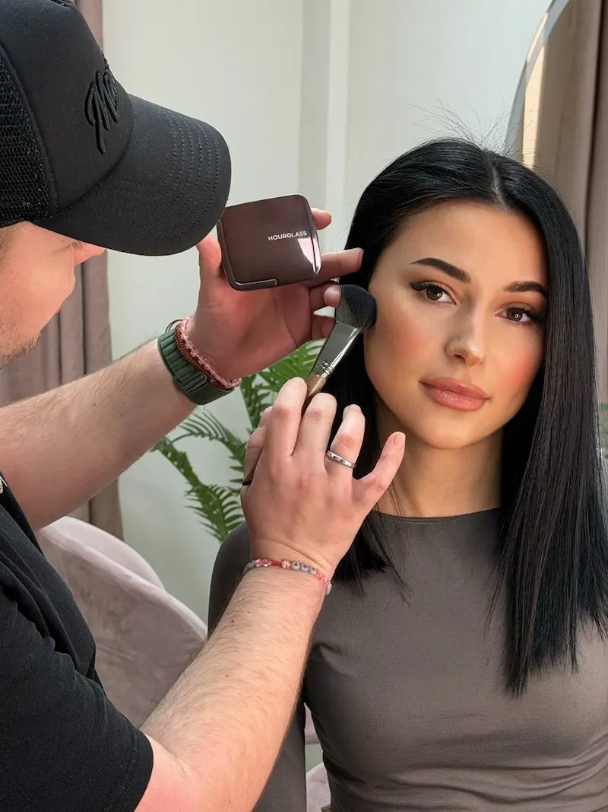
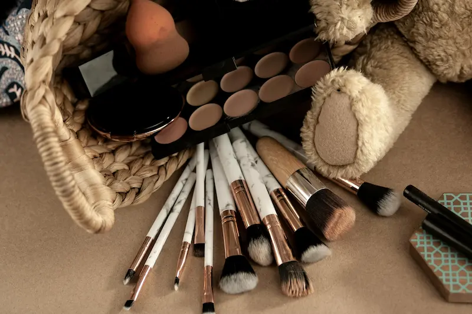
Sfaturi de la make-up artist: cum să faci machiajul ochilor perfect
Urmând aceste recomandări ale make-up artiștilor, vei putea crea un machiaj al ochilor curat și expresiv, atât pentru machiajul de zi, cât și pentru ocazii speciale.
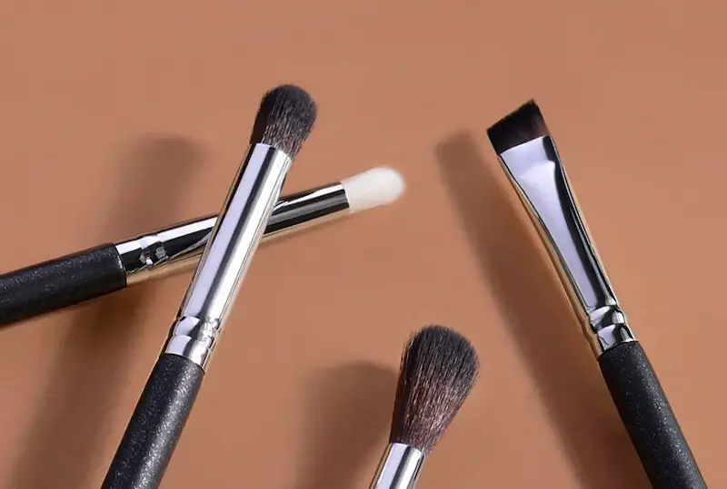
Instrumente pentru machiajul ochilor
Instrumentele de calitate ajută la aplicarea uniformă a fardului și la crearea tranzițiilor line între nuanțe. Pensulele și aplicatoarele potrivite fac machiajul mai profesional și mai ușor de realizat.
Pentru machiajul de zi sunt suficiente 2–3 pensule, dar pentru tehnici mai complexe make-up artiștii folosesc seturi complete pentru aplicare și estompare precisă a fardului.
Palete populare și farduri pentru ochi
Paletele de fard permit crearea unor look-uri variate — de la machiajul de zi natural la cel de seară expresiv. Mai jos sunt cele mai populare și calitative opțiuni, folosite de make-up artiști și pasionații de machiaj.
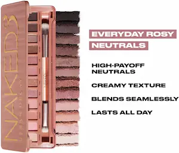
Nuanțe nude și versatile pentru orice ocazie
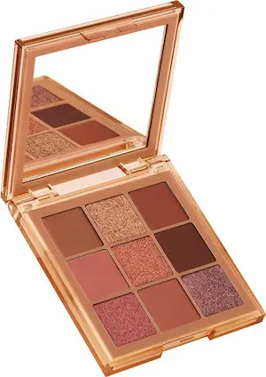
Combină nuanțe mate și sclipitoare
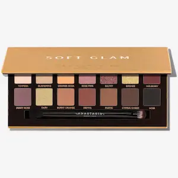
Multe nuanțe pentru machiaj de zi și de seară
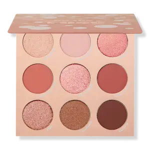
Paletă accesibilă cu nuanțe roz și neutre
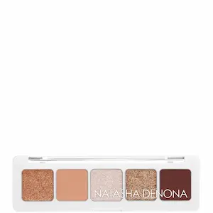
Mini-paleta cu nuanțe profesionale
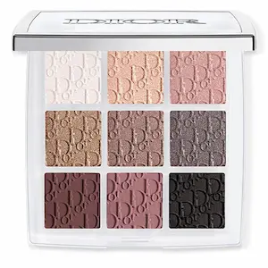
Nuanțe neutre pentru machiaj universal
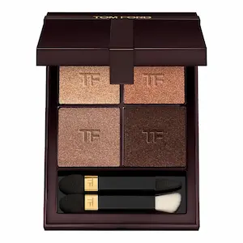
Paletă elegantă cu nuanțe intense
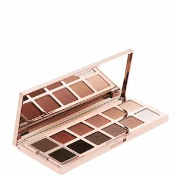
Farduri cremoase cu pigmentare excelentă
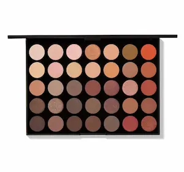
O gamă largă de nuanțe pentru look-uri creative
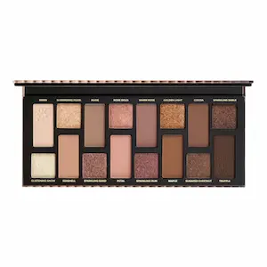
Paletă clasică neutră pentru machiaj de zi
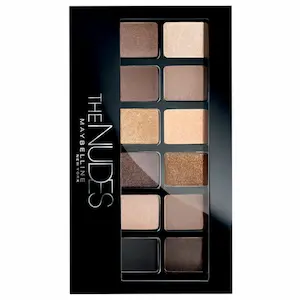
Paletă accesibilă cu nuanțe neutre de bază
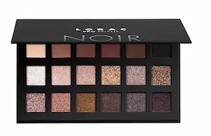
Gamă largă de nuanțe pentru orice ocazie
Greșeli frecvente la aplicarea fardului pentru ochi
Pentru ca machiajul ochilor să arate curat și profesionist, este important să alegi corect nuanțele, să folosești bază, să estompezi fardul și să utilizezi pensulele potrivite.
Întrebări frecvente despre fardurile de ochi
Cum aleg nuanța fardului pentru ochi?
Alege nuanțele în funcție de culoarea ochilor, tonul pielii și efectul dorit. Nuanțele deschise luminează privirea, iar cele închise creează profunzime și expresivitate.
Ce pensule sunt necesare pentru aplicarea fardului?
Setul minim: pensulă plată pentru aplicare, pensulă pufoasă pentru estompare și pensulă mică pentru detalii. Pensulele bune ajută la obținerea unui rezultat profesionist.
Trebuie să folosesc primer înainte de fard?
Da, primerul mărește rezistența fardului, previne pudrărisul și scurgerea culorii, mai ales pe pleoapele grase.
Cum evit căderea fardului sub ochi?
Folosește primer, aplică fardul cu pensula delicat și estompează treptat. Pentru praful fin, poți aplica puțină pudră transparentă sub ochi.
Cum fac machiajul ochilor mai expresiv?
Folosește nuanțe contrastante în pliul pleoapei, adaugă o nuanță deschisă în colțul interior al ochiului și completează cu tuș sau rimel pentru un look final impecabil.